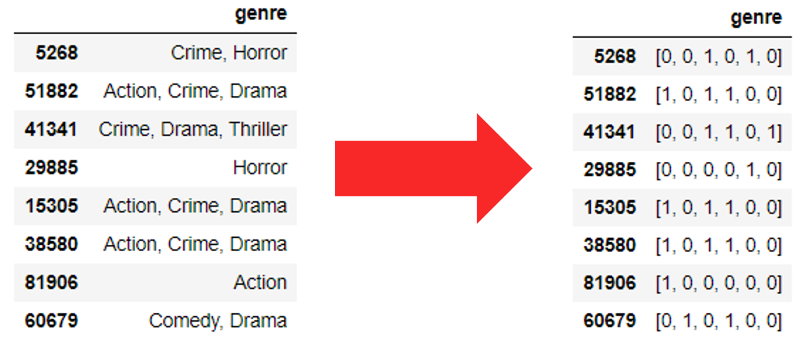
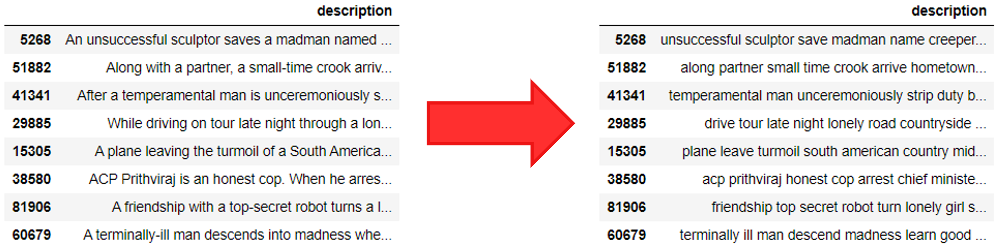
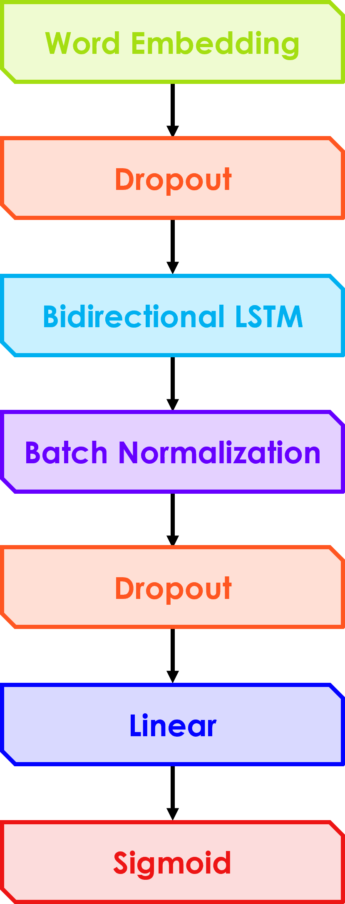

About
This site explains a natural language processing (NLP) group project done in collaboration with rogerchenrc and laviniafr. In this we tested different NLP techniques and model architectures to create a CI/CD pipeline to train and deploy a multi-label classifier. The classifier was trained on dataset of movie descriptions to predict the top fitting genre(s) with 12 possible values including: Drama, Comedy, Action, Crime, Thriller, Romance, Horror, Adventure, Mystery, Family, Fantasy and Sci-Fi. The state of the best trained model was then saved to file and deployed on a custom built web server as demonstrated in the video below:
Data
We decided to use the IMDb movies extensive dataset from Kaggle. This contains 84,983 samples providing a sufficient number to train a robust classifier. Although each film has many attributes, such as year of release and director, we only required the original title, description and list of genres to use as training labels. Some pre-processing was therefore required to remove samples missing this information and to remove unnecessary attributes. This lead to 2,115 samples being dropped with 83,740 remaining.

Analysing the Labels and Descriptions
All films have between one and three genres, each of which can be used as a label during classification. After analysing all samples, it was discovered that there were 25 unique values. However, they were not evenly distributed with 26.7% of samples belonging to Drama and eight genres with less than 1%.


As not all genres have enough representative samples, we initially decided to only keep the most common seven (although later extended to 12). After stripping the uncommon labels and dropping samples that no longer belonged to least one genre, we then evened up the label distributions through sampling. This is because an unbalanced label distribution can lead to bias when training a neural network.
We used various methods to inspect the movie description text including: finding words that are representative of each genre, locating common stop words (e.g. a, the, for) as well as words consistently used across all descriptions (e.g. young, man) that are common across all genres and discovering the most frequent bigrams and trigrams.


Label Encoding and Text Processing
Each film has between one and three genres allowing us to perform multi-label classification. Unlike multi-class, where only one output is given, multi-label allows multiple predictions to be made at once. Therefore to represent the multiple combinations of labels in a way that the classifier can understand, we used multi-hot encoding, i.e. a binary representation, where 1 signifies that a description belongs to a genre and 0 means that it does not.

Before a film description is given as input to the classifier, the text must first be converted to a canonical form. It is therefore processed in the following ways:
- The text is tokenised to separate the words within sentences
- Punctuation and bad characters are removed
- Accented characters are converted to non-accented form, for example “Léon” → “Leon”
- Stop words are removed with the NLTK stop word list
- Lemmatization is applied to convert words into a form compatible with GloVe word embeddings

Classifier
To select the best model architecture to deploy, we each focused on different architectures, across the group covering: CNN, LSTM, transformers, SVM and One-vs-Rest classifiers. We then decided upon the bidirectional LSTM because it had a reasonably good initial performance and unlike some of the other models it is compatible with GloVe word embeddings. Through optimization, we determined the best parameters for this model were: 120 hidden layers, 70% dropout, sigmoid activation function and a batch normalization layer.
The model was then integrated into a pipeline to simplify the process of training a new model trained, saving its state and automatically deploying it to our web application.

Pipeline Code
Topic Modelling
As an alternative approach to our classification task, the team also experimented with the unsupervised topic modelling approaches Latent Dirichlet Allocation and Latent Semantic Analysis. Unfortunately, we found the topics (i.e. grouping of films) uncovered by these algorithms did not align with the film's genres and so they were not used when constructing our final classifier.
Latent Dirichlet Allocation (LDiA)
In

Latent Semantic Analysis (LSA)
Si

Topic Modelling Code
Running the Code
The full code has been uploaded to GitHub. To download the repository, click here.
To ensure all team members could execute the code during development, it was created using a conda environment. This environment has been saved as a YAML file, environment.yml, and is included in the repository. To recreate this environment, open the Anaconda prompt and enter the command below, where environment.yml is the file path of the enviroment file.
conda env create -f environment.yml
Web application
To run the classifier web application:
- conda activate MoviePredictor
- Navigate to Web_App/flaskr
- Run command python main.py
Jupyter notebooks
Contributions
Tom
- CI/CD pipeline development
- Model training, testing and optimization
- Hosting the selected model on the backend of the web application
- Creation of this site
Roger
- Backend development of the Flask web application
- Hosting the app prototype on Heroku
- Functional testing of the application
Lavinia
- Research of web service hosting options
- Frontend development of the web application
- Creation of video demonstrations